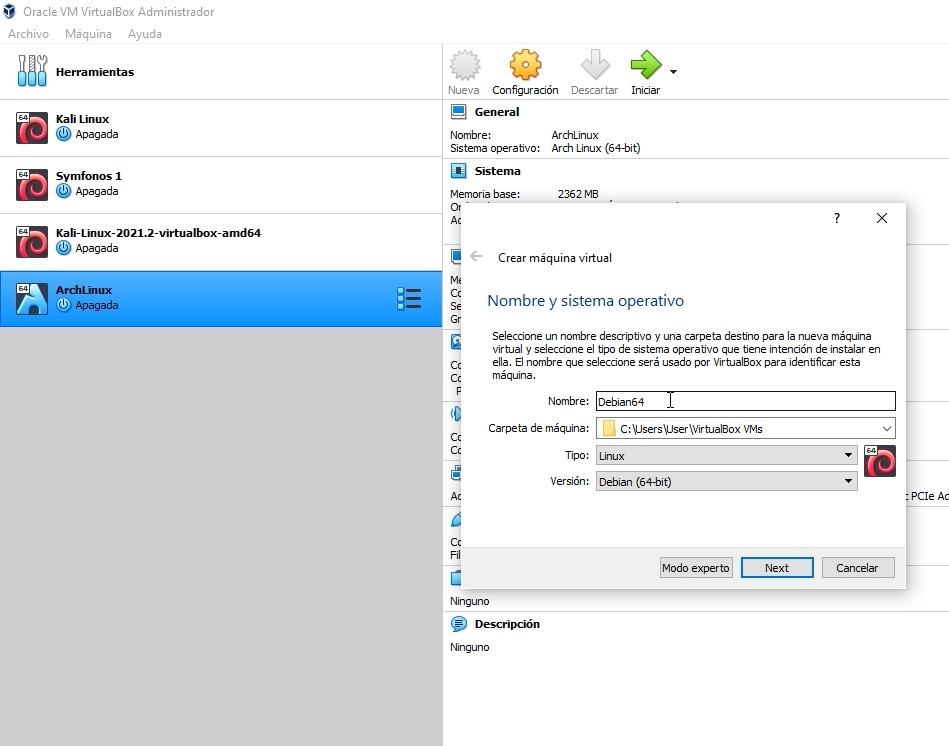

Creando Máquina Virtual
Pues bien, en esta sección te ayudaré a crear tú máquina virtual, recuerda que si no sabes estos principios comiences con la página principal, o instalando VirtualBox.
Configurando la caja
Dando como primer paso la configuración de la caja, debemos de entrar en el programa de VirtualBox previamente instalado, Nos aparece una opción de nueva, esta opción es la que nos permite crear nuevas cajas.
Al darle clic nos saldrá una pestaña en la cual podremos ir haciendo las principales configuraciones, como tal es colocarle el nombre, organizar que sistema operativo será instalado, en mi caso Debian de 64 bit, esta al ser una distribución de Linux, se elige este tipo, también le agregamos algún nombre descriptivo, en mi caso "Debian64".
Luego nos pedirá la cantidad de memoria que se quiere asignar y el tipo de disco virtual, en mi caso siempre he preferido el VDI porque este es fácil de exportar(No explicaré a mayor detalle sobre los discos virtuales, pero te invito a que lo investigues, es interesante tenerlo en cuenta si quieres desarrollar tus propias máquinas y exportarlas).

Luego nos pedirá como queremos reservarlo, yo siempre he preferido dinámico para poder elegir cuanta memoria del disco duro(Tiene que ser menor a tu HDD o SSD físico, ya que este VDI se almacena en tu disco duro, al fin y al cabo es un espacio de memoria de la memoria física que puedes utilizar dentro, como dije, una computadora dentro de una computadora xD).
Pues bien, una vez finalizado se dirigen a la caja que se acaba de crear, dan clic derecho y a configuración.
Nos vamos a almacenamiento y seleccionamos la opción de controlador IDE y damos clic en la zona donde dice más con una imagen de un CD.
Al hacer esto nos aparecerá una ventana en la cual podremos añadir alguna ISO, aquí es donde utilizaras la ISO de Debian, la seleccionas y te diriges al la lista y buscas la ISO de Debian que seleccionaste y la agregas al controlador, y listo, al ejecutar la máquina, comenzara la instalación.
OPCIONAL, nos dirigimos a red y cambias el estado de red NAT a adaptador puente, esto lo que hará es conectarnos a la red hogar, ya que funcionara con el controlador de red, eso si, al hacer esto, la máquina virtual detecta una conexión Ethernet, no puedes conectarte vía inalámbrica, ósea, no te detecta las redes dentro de la máquina virtual, pero esto no significa que no tengas conexión, sino que es más una emulación de la conexión que hay en el sistema principal, ósea que si el sistema operativo base no tiene conexión, las cajas virtuales tampoco, espero se entienda el concepto. Si no en caso de cualquier cosa puedes contactarme o buscar a través de internet. Pues bien, paro en esta parte para felicitarte si has hecho todo con éxito, en la siguiente sección te ayudaré a instalar Debian o el sistema operativo Linux de tu elección, vamos.